set.seed(25)
Rlab::rbern(n=20, prob=0.3)
#> [1] 0 0 0 1 0 1 0 0 0 0 0 0 1 0 0 0 0 1 0 12 Kansverdelingen
Een kansverdeling is de theoretische tegenhanger van de waargenomen frequentieverdeling. Een frequentieverdeling laat zien hoe vaak een bepaalde waarde/gebeurtenis is voorgekomen Een kansverdeling zegt hoe vaak het had moeten voorkomen.
2.1 Kans(dichtheid)functie en Verdelingsfunctie
Zowel bij discrete kansvariabelen \(\underline{k}\) als continue kansvariabelen \(\underline{x}\) heb je een verzameling van uitkomsten die bestaat uit reële getallen. De beschrijving van de kansen op de diverse uitkomsten heet de kansfunctie (in het discrete geval) of de kansdichtheid (in het continue geval). Soms kan het handig zijn om te rekenen met cumulatieve kansen, dan wordt gewerkt met de (cumulatieve) verdelingsfunctie.
Engelstalig:
- PDF = Probability Density Function (kansdichtheidfunctie)
- CDF = cumulative distribution function (verdelingsfunctie)
- Q(p) = Quantile function
discrete variabelen
- kansvariabele \(\underline{k}\)
- kansfunctie \(f(k) = P(\underline{k} = k)\)
- verdelingsfunctie \(F(k) = P(\underline{k} \le k)\)
continue variabelen
- kansvariabele \(\underline{x}\)
- kansdichtheid \(f(x)\)
- verdelingsfunctie \(F(x) = \int_{-\infty}^{x}f(y)dy\)
De cumulatieve kansverdeling \(F(x)\) wordt berekend als de integraal van de kansdichtheid \(f(x)\). Omgekeerd kan de kansdichtheid berekend worden als de afgeleide van de verdelingsfunctie: \(f(x) = F'(x)\)
2.2 Verdelingsfuncties in R
R heeft standaard functies voor de meeste kansverdelingen. Voor elke kansverdeling zijn steeds vier functies beschikbaar die steeds beginnen met een van de volgende voorvoegsels: d, p, q of r:
- d : kansdichtheidsfunctie (PDF), geeft de kans op waarde x.
- p : Cumulatieve verdelingsfunctie (CDF), geeft de kans op een waarde <= x.
- q : Inverse cumulatieve kansfunctie (quantile function), geeft de waarde behorend bij een kans <= p% (kwantiel)
- r : Genereert random getallen uit de verdeling
De functienamen bestaan uit een voorvoegsel (d, p, q, r) en een achtervoegsel welke de desbetreffende verdeling aangeeft.
| Discrete verdeling | R naam | Parameters |
|---|---|---|
| Binomiaal | binom | n = aantal trekkingen; p = kans op succes voor een trekking |
| Geometrisch | geom | p = kans op succes voor een trekking |
| Hypergeometrisch | hyper | m = aantal witte ballen in de pot; n = aantal zwarte ballen in de pot; k = aantal trekkingen |
| Negatief binomiaal (NegBinomial) | nbinom | size = aantal succesvolle trekkingen; of prob = kans op succes of mu = gemiddelde |
| Poisson | pois | lambda = gemiddelde |
| Continue verdeling | R naam | Parameters |
|---|---|---|
| Beta | beta | a (vorm 1); b (vorm 2) |
| Cauchy | cauchy | location; scale |
| Chikwadraat (Chisquare) | chisq | df = aantal vrijheidsgraden |
| (Negatief) Exponentieel | exp | rate (snelheid) |
| F | f | df1 en df2 = aantal vrijheidsgraden |
| Gamma | gamma | rate; of rate of scale |
| Log-normal (Lognormal) | lnorm | meanlog = gemiddelde; sdlog = standaardafwijking (beide op logaritmische schaal) |
| Logistisch | logis | location; scale |
| Normaal | norm | mean = gemiddelde; sd = standaardafwijking |
| Student’s t (TDist) | t | df = aantal vrijheidsgraden |
| Uniform | unif | min = ondergrens; max = bovengrens |
| Weibull | weibull | shape; scale |
| Wilcoxon | wilcox | m = aantal waarnemingen in eerste steekproef; n = aantal waarnemingen in tweede steekproef |
Belangrijk
Belangrijk, zet bij het genereren van random getallen altijd eerst set.seed() wanneer de random getallen gereproduceerd moet kunnen worden. Voor goede uitleg zie ook Probability Distributions in R (Stat 5101, Geyer).
2.2.1 Bernoulli verdeling
Dit is een discrete kansverdeling die een experiment beschrijft met als enige uitkomsten succes of mislukking. Hierbij neemt de kansvariabele \(X\) de waarde 1 aan bij succes en 0 bij mislukking. Een voorbeeld is het opgooien van een munt, met \(p\) als de kans op succes (bijvoorbeeld kop boven).
\(P(X = 1) = p\) en \(P(X = 0) = 1 - p\)
De kansfunctie kan ook geschreven worden als
\[ f(k;p)= \left \{ \begin{array}{ll} p & \mbox{als $k = 1$}\\ 1-p & \mbox{als $k = 0$}\\ 0 & \mbox{anders} \end{array} \right \} \]
Deze uitdrukking kan ook geschreven worden als
\(f(k;p) = pk+(1-p)(1-k)\) voor \(k \in \{0,1\}\)
Verwachtingswaarde = \(E(X) = p\) en variantie = \(Var(X) = p(1-p)\).
Als je een Bernoulli experiment meerdere malen na elkaar uitvoert, dan heet dat een binomiaal kansexperiment. Als \(X_1, X_2, ..., X_n\) onafhankelijke, identiek verdeelde kansvariabelen zijn, die alle Bernoulli verdeeld zijn met kans op succes \(p\), dan is \(Y = \sum_{k=1}^{n} X_k\) een binomiaal verdeelde variabele met parameters \(n\) en \(p\).
Basis R heeft geen functies voor Bernoulli verdelingen. Deze zijn wel beschikbaar in package Rlab als dbern, pbern, qbern en rbern.
Voorbeeld 2.1 Genereer 20 random getallen uit een Bernoulli verdeling met kans op succes 0,3.
Je zou dit in standaard R kunnen nabootsen met de functie sample.
set.seed(25)
sample(c(0, 1), size = 20, replace=T, prob = c(0.7, 0.3))
#> [1] 0 0 0 1 0 1 0 0 0 0 0 0 1 0 0 0 0 1 0 12.2.2 Binomiale verdeling
De binominale (bi = twee, nominaal = categorieën) verdeling is een verdeling van het aantal successen in een reeks van \(n\) onafhankelijke Bernoulli experimenten. Voor \(n=1\) is de verdeling gelijk aan een Bernoulli verdeling.
Een Bernoulli variabele is een variabele met twee mogelijke uitkomsten:
- succes (= 1) met kans \(p\)
- geen succes (= 0) met kans \(q = 1-p\)
Een binomiale verdeling is de som van een aantal (n) onafhankelijke en identiek verdeelde Bernoulli variabelen.
Voor n trekkingen met kansvariabele X geldt
- notatie: \(X \sim B(n, p)\)
- Verwachting: \(E(X) = np\)
- Variantie: \(Var(X) = np(1-p)\)
- kansfunctie: \(f(k;n,p) = P(X = k) = \binom{n}{k} p^k(1-p)^{n-k}\)
Voorbeeld 2.2 Er wordt 10 keer geworpen met een eerlijke munt. Wat is de kans op een bepaald aantal keren kop? In de volgende figuur is dit experiment 10.000 keer gesimuleerd.
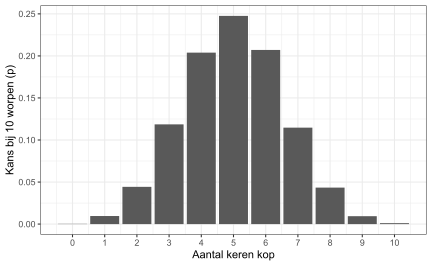
R-Functies: dbinom(), pbinom(), qbinom(), rbinom()
dbinom
dbinom(x ,size = n, prob = p) geeft de kans op x successen bij n experimenten waarbij p de met kans op succes is.
Voorbeeld 2.3 Bij 2 worpen met een eerlijk muntstuk (dus p = 0.5) zijn de mogelijke uitkomsten: kop-kop, kop-munt, munt-kop, munt-munt. De kans op succes (kop) is 0.5 Dit geeft
x <- c(0, 1, 2)
dbinom(x, size = 2, prob = 0.5)
#> [1] 0.25 0.50 0.25Dus
| x (aantal kop) | p (kans) |
|---|---|
| 0 | 0.25 |
| 1 | 0.50 |
| 2 | 0.25 |
Stel je gooit 10 keer met een eerlijke dobbelsteen. Wat is de kans dat je precies twee keer een zes gooit?
dbinom(2, size = 10, prob = 1/6)
#> [1] 0.291pbinom
Wat is de kans op 10 of minder goede antwoorden bij het willekeurig invullen van veertig 4-keuzevragen?
Voorbeeld 2.4 Bij het willekeurig invullen van een 4-keuzevraag is de kans op succes (antwoord goed) 0.25 en de kans op geen succes 0.75
pbinom(10, size = 40, prob = 0.25)
#> [1] 0.584rbinom
Voorbeeld 2.5 Een school heeft 2000 leerlingen, waarvan 50% meisjes en 50% jongens. Deze leerlingen worden verdeeld over 100 klassen met in elke klas 20 leerlingen. Wat is de kansverdeling van het aantal meisjes in elke klas?
Dat zijn 100 trekkingen uit een binomiale verdeling met grootte 20 en kans op succes (is meisje) van 0.5
set.seed(30)
aantalmeisjes <- rbinom(n = 100, size = 20, prob = 0.5)
table(aantalmeisjes)
#> aantalmeisjes
#> 4 5 6 7 8 9 10 11 12 13 14 15 16
#> 1 1 7 10 15 16 17 13 7 8 2 2 1
hist(aantalmeisjes, main = "Histogram aantal meisjes")
barplot(table(aantalmeisjes), main = "Kolomdiagram aantal meisjes")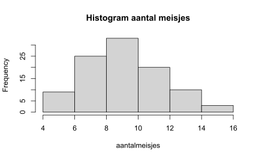
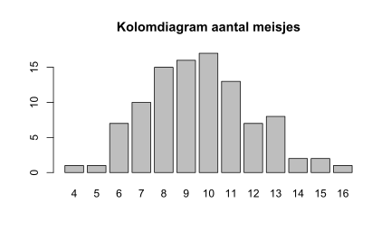
2.2.3 Poisson verdeling
Kansfunctie: \(f(x) = P(X=x) =e^{-\mu \frac{\mu^x}{x!}}\) voor \(x = 0, 1, 2, \dots\)
R-Functies: dnpois(), ppois(), qpois(), rpois()
Een Poisson-verdeling is een soort binomiale verdeling met een grote \(n\) en een kleine \(p\). Voorbeeld: aantal verkeersongelukken per dag. Vaak speelt de tijd een rol bij de Poisson-verdeling.
- \(k \sim Poisson(\mu)\)
- \(E(k) = Var(k) = \mu = \lambda * t\) met \(\lambda\) = aantal successen per tijdseenheid.
dpois
Stel dat het aantal biefstukken dat in een restaurant per dag besteld wordt een Poisson verdeling met een gemiddelde van 20 volgt. Wat is de kans dat op een dag precies 25 biefstukken besteld worden?
dpois(25, lambda = 20)
#> [1] 0.0446qpois
Een vervolg op de voorgaande vraag. Wanneer het restaurant aan ten minste 80% van de vraag naar biefstukken wil voldoen, hoeveel biefstukken moeten dan beschikbaar zijn?
qpois(0.80, 20)
#> [1] 24rpois
rpois(n, lambda) genereert \(n\) trekkingen uit een Poissonverdeling met een verwachtingswaarde \(\lambda\).
Voorbeeld 2.6
set.seed(35)
x <- rpois(n = 1000, lambda = 4)
table(x)
#> x
#> 0 1 2 3 4 5 6 7 8 9 10 11 12 13
#> 12 69 146 197 207 133 114 72 30 9 7 2 1 1
barplot(table(x))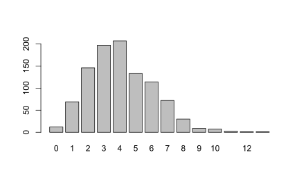
Voorbeeld 2.7 Er moeten 100 groepen gemaakt worden, elk bestaande uit 5 getallen uit een Poisson verdeling met een gemiddelde van 10. Hierbij wordt gebruik gemaakt van de functie replicate() die een matrix maakt 100 kolommen en 20 rijen.
set.seed(38)
my_pois <- replicate(100, rpois(n = 5, lambda = 10))
kolomgemiddeldes <- colMeans(my_pois) # kolomgemiddeldes
hist(kolomgemiddeldes)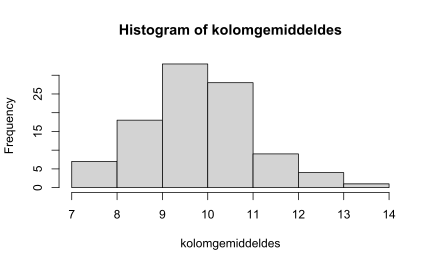
Opm.: De verdeling begint een beetje op een normale verdeling te lijken (gevolg centrale limietstelling)
2.2.4 Normale verdeling
De normale verdeling geeft de kans weer dat een bepaalde waarde voorkomt voor een continue variabele.
Kansdichtheid: \(f(x) = \frac{1}{\sigma\sqrt{2\pi}} e^{-\frac{1}{2}(\frac{x - \mu}{\sigma})^2}\)
R-Functies: dnorm(), pnorm(), qnorm(), rnorm()
dnorm
Syntax: dnorm(x, mean=0, sd=1, log=FALSE)
x <- seq(from = -5, to = 5, length.out = 100) # 100 waarden, lopend van -5 tot 5
f <- dnorm(x)
plot(x, f, type = "l", xlab = "x", ylab = "f(x)", main ="")
F <- pnorm(x)
plot(x, F, type = "l", xlab = "x", ylab = "F(x)", main = "")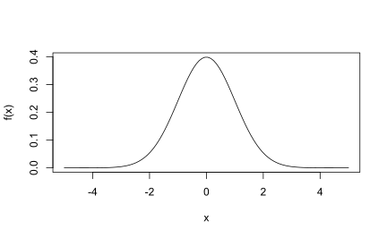
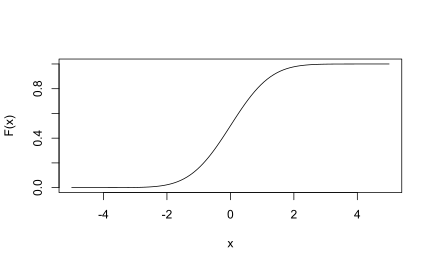
pnorm
Syntax: pnorm(x, mean=0, sd=1, lower.tail=TRUE, log.p=FALSE)
Geeft de cumulatieve verdelingsfunctie (CDF). Voor lower.tail = TRUE (defaultwaarde) worden de kansen berekend voor \(P(\underline{x} \le x)\) en voor lower.tail = FALSE de kansen \(P(\underline{x} \gt x)\).
pnorm(0) # 50% ligt onder het gemiddelde 0
#> [1] 0.5
pnorm(-2) # 2.3% ligt meer dan 2 standaarddeviaties onder het gemiddelde
#> [1] 0.0228
pnorm(1.96) # 97.5% ligt dus links van de waarde z=1, dus 2.5% rechts daarvan
#> [1] 0.975
pnorm(1.96) - pnorm(-1.96) # 95% ligt tussen de waarden z=-1.96 en z=1.96
#> [1] 0.95
pnorm(12, mean = 10, sd = 2, lower.tail = FALSE) # 15.9% kans op waarde groter dan 12 bij N(10,2)
#> [1] 0.159
1 - pnorm(12, mean = 10, sd = 2) # alternatieve manier
#> [1] 0.159qnorm
Syntax: qnorm(p, mean=0, sd=1, lower.tail=TRUE, log.p=FALSE)
Met deze functie kun je het kwantiel (percentiel) Q vinden voor elke kans p.
qnorm(0.5) # 50% quantiel is de mediaan, hier tevens het gemiddelde
#> [1] 0
qnorm(0.975) # De waarde bij het 97.5% quantiel
#> [1] 1.96
qnorm(0.975, lower.tail = FALSE) # 97.5% ligt boven deze waarde
#> [1] -1.96
qnorm(0.025) # hetzelfde als voorgaande
#> [1] -1.96Een illustratie van het 75% quantiel.
# Maak een grafiek van de N(0,1) verdeling
x <- seq(from = -5, to = 5, length.out = 100)
f <- dnorm(x)
nframe <- data.frame(x = x, y = f)
# Bereken het 75% quantiel (percentiel)
line <- qnorm(0.75)
xstr <- sprintf("qnorm(0.75) = %1.3f", line)
# Het deel van de N(0,1) verdeling links van het 75% percentiel
nframe75 <- subset(nframe, nframe$x < line)
# Maak tekening
# Het grijze gebied is 75% van het oppervlak onder de normaal grafiek
ggplot(nframe, aes(x = x, y = y)) + geom_line() +
geom_area(data = nframe75, aes(x = x, y = y), fill = "gray") +
geom_vline(aes(xintercept = line), linetype = 2) +
geom_text(x = line, y = 0, label = xstr, vjust = 1)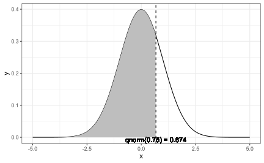
rnorm
Syntax: rnorm(n, mean=0, sd=1)
# trek 1000 waarden uit een N(0,1) verdeling
u <- rnorm(1000)
head(u)
#> [1] -0.610 -0.426 -1.169 -1.532 -0.150 -1.3612.2.5 Uniforme verdeling
Een verdeling is uniform wanneer elke mogelijke uitkomst een gelijke kans van optreden heeft. Stel je trekt een naam uit een hoed met 12 namen trekken. Elke naam heeft evenveel kans om getrokken te worden (\(p = \frac{1}{12}= .0833\)). Als je deze verdeling zou visualiseren, zou het er als volgt uitzien:
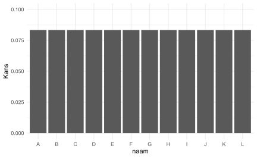
Kansdichtheid:
- \(f(x) = \frac{1}{b-a}\) voor \(a \le x \le b\)
- \(f(x) = 0\) voor \(x < a\) of \(x > b\)
Verdelingsfunctie:
- \(F(x) = 0\) voor \(x < a\)
- \(F(x) = \frac{x-a}{b-a}\) voor \(a \le x \le b\)
- \(F(x) = 1\) voor \(x > b\)
R-Functies: dunif(), punif(), qunif(), runif()
runif
runif(n, min=a, max=b) genereert n trekkingen uit een uniforme verdeling op het interval van a tot b.
2.2.6 (Negatief) Exponentiële verdeling
Kansdichtheid:
- \(f(x) = \lambda e^{-\lambda x}\) voor \(x \ge 0\) en \(\lambda \gt 0\)
- \(f(x) = 0\) voor \(x < 0\)
Verdelingsfunctie:
- \(F(x) = 1 - e^{-\lambda x}\) voor \(x \ge 0\)
- \(F(x) = 0\) voor \(x < 0\)
R-Functies: dexp(), pexp(), qexp(), rexp()
pexp
De levensduur van een bepaald type gloeilamp volgt een exponentiële verdeling met een gemiddelde tijd van 24 maanden. Wat is de kans dat een willekeurige gloeilamp binnen de eerste zes maanden kapot gaat? En wat is de kans dat een gloeilamp meer dan 4 jaar (48 maanden) meegaat?
pexp(6, 1/24) # kans kapot in eerste 6 maanden
#> [1] 0.221
pexp(48, 1/24, lower.tail = FALSE) # kans op meer dan 4 jaar goed
#> [1] 0.135qexp
Een vervolg op de voorgaande gloeilampvraag. Na hoeveel maanden is 40% van de gloeilampen kapot?
qexp(0.4, 1/24)
#> [1] 12.32.2.7 Chi-kwadraat verdeling
\(E_{\chi^2} = 1\) en \(var_{\chi^{2}[n]} = 2n\)
R-Functies: dchisq(), pchisq(), qchisq(), rchisq()
qchisq
Beneden welke grens ligt het 95% gebied van een \(\chi^{2}[6]\) verdeling?
qchisq(p = 0.95, df = 6)
#> [1] 12.62.2.8 t verdeling
Voor kleine steekproeven uit een normale verdeling met onbekende \(\sigma\). Advies:
- normale verdeling + bekende \(\sigma\) -> normale verdeling
- normale verdeling + onbekende \(\sigma\):
- \(n \le 30\) -> t-verdeling
- \(n \gt 30\) -> normale verdeling
R-Functies: dt(), pt(), qt(), rt()
2.2.9 Beta verdeling
R-Functies: dbeta(), pbeta(), qbeta(), rbeta()
De beta verdeling is een continue kansverdeling gedefinieerd op het interval [0,1] en heeft twee niet negatieve parameters \(\alpha\) en \(\beta\) die de vorm bepalen. De verdeling wordt o.a. gebruikt bij het modelleren van tijdsuren voor projecten.
\(\mu =\frac{\alpha}{\alpha + \beta}\) en \(\sigma^2 = \frac{\alpha \beta}{(\alpha + \beta)^2 (\alpha + \beta + 1)}\).
Oplossen voor \(\alpha\) en \(\beta\) geeft
\(\alpha = (\frac{1 - \mu}{\sigma^2} - \frac{1}{\mu}) \mu^2\) en \(\beta = \alpha (\frac{1}{\mu} - 1)\)
dbeta
Syntax: dbeta(x, shape1, shape2, ncp = 0, log = FALSE)
x <- seq(0, 1, by = 0.02)
y <- dbeta(x, shape1 = 2, shape2 = 5)
plot(x, y)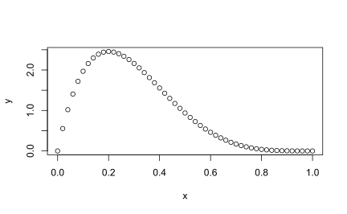
pbeta
Syntax: pbeta(q, shape1, shape2, ncp = 0, lower.tail = TRUE, log.p = FALSE)
Als voorbeeld een cumulatieve verdelingsfunctie.
y <- pbeta(x, shape1 = 2, shape2 = 5)
plot(x, y)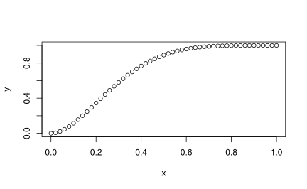
qbeta
Syntax: qbeta(p, shape1, shape2, ncp = 0, lower.tail = TRUE, log.p = FALSE)
y <- qbeta(x, shape1 = 2, shape2 = 5)
plot(x, y)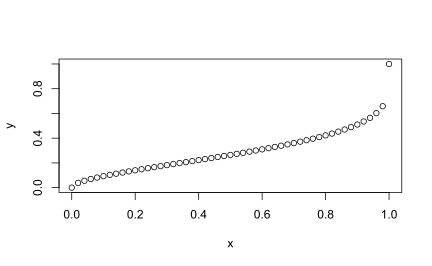
rbeta
Syntax: rbeta(n, shape1, shape2, ncp = 0)
set.seed(12345)
aantal <- 1000
x <- rbeta(n = aantal, shape1 = 1, shape2 = 5)
head(x)
#> [1] 0.0719 0.0591 0.1923 0.2934 0.0670 0.2374
plot(density(x), main="Beta verdeling", ylab = "Dichtheid")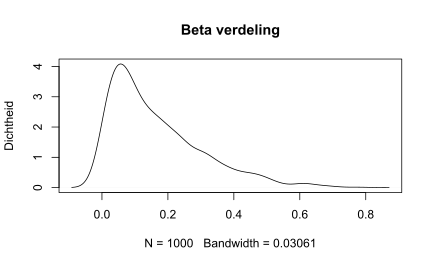
2.2.10 Lognormale verdeling
Een lognormale verdeling is een continue kansverdeling van een variabele waarvan de logaritme normaal verdeeld is. Dus als de variabele X lognormaal verdeeld is, dan heeft Y = ln(X) een normale verdeling. Op analoge wijze, als Y een normale verdeling heeft, dan heeft de exponentiële functie van Y, X = exp(Y) een lognormale verdeling.
Een lognormaal verdeelde variabele heeft alleen positieve waarden. Het is een handig en nuttig model voor metingen in exacte en technische wetenschappen, maar ook in geneeskunde , economie en andere onderwerpen (bijv. energieën, concentraties, lengtes, financiële opbrengsten en andere statistieken).
R-Functies: dlnorm(), plnorm(), qlnorm(), rlnorm()
2.3 Standaardiseren
De Z-score of Z-waarde is de gestandaardiseerde vorm van een variabele en wordt berekend via \(z = \frac{x - \mu}{\sigma}\).
Om deze waarden te bepalen kun je de functie scale(x) gebruiken. Wanneer je scale(x, scale = FALSE) toepast dan wordt alleen \(x - \mu\) berekend, de waarden worden dan gecentreerd.
x <- rnorm(n = 10, mean = 50, sd = 5)
summary(x)
#> Min. 1st Qu. Median Mean 3rd Qu. Max.
#> 39.8 45.6 49.9 49.0 52.8 56.7
sd(x)
#> [1] 5.28
zx <- scale(x)
summary(zx)
#> V1
#> Min. :-1.736
#> 1st Qu.:-0.649
#> Median : 0.171
#> Mean : 0.000
#> 3rd Qu.: 0.721
#> Max. : 1.463
sd(zx)
#> [1] 1
Opmerking
Bij een dataframe kun je ook gebruiken maken van de functie mutate() uit package dplyr via
mutate(zscore = (variabele - mean(variabele) / sd(variabele))
2.4 Normaliteit toetsing
Bij nogal wat statistische methoden wordt er vanuit gegaan dat de dataset een bepaalde statistische verdeling volgt, vaak een normale verdeling. Voordat je met die methode aan de slag gaat moet je wel eerst controleren of deze aanname klopt.
2.4.1 Visuele controle
Histogram
hist(trees$Height, xlab = "Hoogte (ft)", main = "Histogram boomhoogte")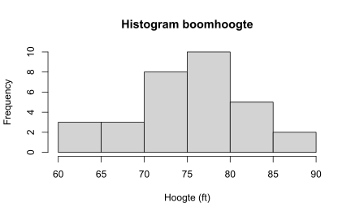
Histogrammen zijn niet voldoende, vooral niet bij kleine steekproeven (kleiner dan 20)
Dichtheidsgrafiek
plot(density(trees$Height), main = "Dichtheidsgrafiek")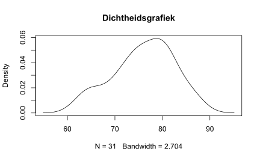
QQ plot
Om te beoordelen of twee gegevensverzamelingen dezelfde kansverdelingen volgen kun je gebruik maken van een Quantiel-Quantiel (Q-Q) grafiek. Dit is in feite een spreidingsdiagram waarin de quantielen van de twee verzamelingen tegen elkaar uitgezet worden. Wanneer de verdelingen gelijke vormen hebben dan liggen deze punten nagenoeg op een rechte lijn. Het is slechts een visuele verificatie en geen volledig bewijs.
qqplot(x = rnorm(n=100, mean = 50, sd = 3), y = rnorm(n=200, mean = 50, sd = 3))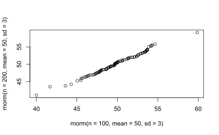
Twee gegevensverzamelingen met elkaar vergelijken komt niet zo vaak voor. Veel vaker wordt de verdeling van een verzameling (een steekproef) vergeleken met een theoretische verdeling (normale verdeling, …).
qqnorm
Voor het vergelijken met een normale verdeling kent R een speciale qqplot functie qqnorm(y). Hiermee kun je dus visueel beoordelen of de verdeling van de te onderzoeken gegevens op een normale verdeling lijkt.
R heeft ook een functie qqline(y) die als extra nog een lijn in de qqnorm grafiek tekent. Met deze lijn kun je nog gemakkelijker beoordelen of de verdeling van een normale verdeling afwijkt. Je moet deze opdracht dan wel direct na de qqnorm functie geven.
qqnorm(trees$Height)
qqline(trees$Height, col = "steelblue", lwd = 2)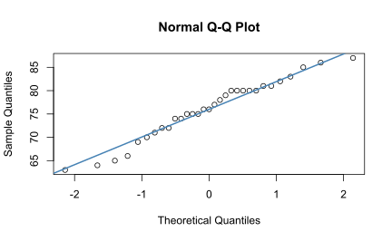
De afwijkingen t.o.v. de lijn zeggen iets over de scheefheid (skew) van de verdeling.
Package car heeft ook een qqPlot() functie die voor een betere visualisatie zorgt.
2.4.2 Normaliteitstest
Visuele inspectie kan soms onbetrouwbaar zijn. Er zijn ook toetsen beschikbaar om formeel te testen of gegevens een een normale verdeling volgen. Een veel gebruikte toets is Shapiro-Wilk’s met de volgende hypotheses:
- \(H_0\): de gegevens volgen een normale verdeling
- \(H_1\): de gegevens volgen geen normale verdeling
shapiro.test(trees$Height)
#>
#> Shapiro-Wilk normality test
#>
#> data: trees$Height
#> W = 1, p-value = 0.4De p-waarde is groter dan 0,05, de nulhypothese wordt niet verworpen, de gegevens volgen een normale verdeling.
Het is belangrijk op te merken dat normaliteitstoetsen in de praktijk vaak als te conservatief worden beschouwd in de zin dat voor een grote steekproef (n> 50) een kleine afwijking van de normaliteit ertoe kan leiden dat de normaliteitsconditie wordt geschonden. Het is een is een hypothesetoetsing, dus naarmate de steekproefomvang toeneemt, neemt hun vermogen om kleinere verschillen te detecteren toe. Dus naarmate het aantal waarnemingen toeneemt, wordt de Shapiro-Wilk-toets zeer gevoelig, zelfs voor een kleine afwijking van de normaliteit. Het kan dus voorkomen dat volgens de toets de gegevens niet normaal verdeeld zijn, terwijl de afwijkingen van de normale verdeling te verwaarlozen zijn. Om deze reden wordt de normaliteitsvoorwaarde vaak geverifieerd op basis van een combinatie van zowel visuele inspectie (met name de QQ grafiek) en een formele toetsing.
2.5 Kwantielen
Een kwantiel is een getal dat een dataset verdeelt in twee delen, de kleinere en de grotere waarden. Zo geeft het 0,85-kwantiel een verdeling met een fractie 0,85 kleinere waarden en een fractie 0,15 grotere waarden. Deze waarde wordt aangegeven met \(Q(0,85)\) Bekend is het 0,5-kwantiel, de mediaan genaamd, die het midden is van een geordende dataset.
Opmerking
Het concept van kwantiel is nauw verbonden met het concept van percentiel. Wanneer iemand op een toets een percentielscore van 85 heeft, betekent dat 85% van alle deelnemers bij die toets dezelfde of een lagere score heeft en 15% van de deelnemers een hogere score heeft. Het enige verschil tussen percentiel en kwantiel is dat percentiel verwijst naar een percentage van de verzameling gegevens en kwantiel verwijst naar een fractie van de verzameling gegevens.
Voor een verzameling van \(n\) getallen \(x_1, x_2, ..., x_n\), waaronder mogelijk gelijke, wordt het \(p\)-kwantiel \(x_p\) bepaald door de eisen:
- ten minste \(pn\) van de data zijn kleiner dan of gelijk aan \(x_p\).
- ten minste \((1-p)n\) van de data zijn groter dan of gelijk aan \(x_p\).
Als twee aangrenzende uitkomsten aan de eisen voldoen, neemt men het gemiddelde van beide als kwantiel.
Helaas stuit deze definitie op complicaties als je probeert de eigenlijk kwantielen te berekenen voor de waarnemingen in een dataset. Als je bijvoorbeeld het \(Q(0,27)\) kwantiel wilt berekenen uit 10 waarnemingen, dan is elke waarneming 10 procent van de hele set, dus je kunt een fractie van 0,2 of 0,3 van de gegevens afsplitsen, maar er is geen waarde die een fractie van precies 0,27 zal afsplitsen. En als je het splitsingspunt precies bij een waarneming zou plaatsen, zou je ook niet weten of je die waarneming in het onderste of bovenste deel moet meetellen.
Het probleem is dus het berekenen van een kwantiel. Er zijn maar liefst 9 verschillende methodes, R-1 t/m R-9, zie wikipedia. R ondersteunt ze alle 9, maar Excel slechts twee ervan. Resultaten van softwarepaketten kunnen dus verschillen. Deze problematiek wordt fraai geschetst in Quantiles, Percentiles: Why so many ways to calculate them?.
Voor gebruik in Excel zie ook Ranking Functions in Excel bij het onderdeel PERCENTILE.
Formule methode R-1: Het \(p\)-kwantiel in een geordende verzameling van \(n\) elementen is het element met rangnummer \(pn + 0,5\)
Voorbeeld 1
Dataset met 9 waarnemingen: 2, 3, 5, 7, 8, 9, 11, 12, 15
Het 0,2-kwantiel is het getal 3. Er zijn 2, dus ten minste 1,8 getallen kleiner dan of gelijk aan 3 en er zijn 8, dus ten minste 7,2 getallen groter dan of gelijk aan 3.
En volgens methode 2
- 0,2 kwantiel, 9*1/5 = 1,8 -> rangnummer 2. Dit is het getal 3
- 0,4 kwantiel, 9*2/5 = 3,6 -> rangnummer 4. Dit is het getal 7
- 0,6 kwantiel, 9*3/5 = 5,4 -> rangnummer 6. Dit is het getal 9
- 0,8 kwantiel, 9*4/5 = 7,2 -> rangnummer 8. Dit is het getal 12
Zo heet het 0,25-kwantiel ook het \(1^{ste}\)-kwartiel en het \(25^{ste}\)-percentiel.
Voorbeeld 2
Dataset met 10 waarnemingen: 2, 3, 5, 7, 8, 9, 11, 12, 15, 20
Voor het 0,2-kwantiel voldoen zowel het getal 3 als 5. Hiervan wordt het gemiddelde genomen, dus 4.
Speciale kwantielen
- 2 delen: mediaan
- 4 delen: kwartielen
- 10 delen: decielen
- 100 delen: percentielen
Voor het 0,2-kwantiel voldoen zowel het getal 3 als het getal 5. Het 0.2 kwantiel is hier het gemiddelde van, dus het getal 4.
2.5.1 Kwantielen in Excel
Er is een handige bruikbare definitie voor het berekenen van kwantielen. Er wordt uitgegaan van een verzameling geordende (van klein naar groot gesorteerd) gegevens \(Y_i\) met \(i = 1,2,...n\). Voor een fractie \(p\) (tussen 0 en 1) wordt het kwantiel \(Q(p)\) als volgt gedefinieerd. Neem voor \(Q(p)\) de waarde \(Y_i\) wanneer \(p\) een van de volgende fracties is \(p_i = (i - 0,5)/n\). Dus de kwantielen \(Q(p_i)\) van de waarnemingen zijn gelijk aan de geordende waarnemingen \(Y_i\) zelf.
Belangrijk
Je rekent dus niet voor een bepaalde fractie het bijbehorende kwantiel uit, maar je rekent voor elke kwantielwaarde (= de waarneming) de bijbehorende fractie uit.
Q-Q plot
Een Q-Q plot vergelijkt de kwantielen van een dataset met een set kwantielen van een theoretische kansverdeling. Daardoor is een Q-Q plot geschikt om te beoordelen of de verdeling van de dataset lijkt op die van de theoretische verdeling.
De werkwijze is als volgt
- Bepaal voor elke waarneming (= kwantielwaarde) in de dataset de bijbehorende fractie.
- Bereken voor elke gevonden fractie de bijbehorende kwantielwaarde van de theoretische verdeling uit.
- Zet de kwantielwaarden tegen elkaar uit in een spreidingsdiagram.
- Beoordeel of de punten op een rechte lijn liggen. Hoe beter de punten samenvallen met de rechte lijn, des te meer lijkt de verdeling in de dataset op de theoretische verdeling.
Voorbeeld
In de volgende figuur staan 22 waarnemingen \(Y_i\) (zie Excelbestand qqplot.xlsx. Voor elke waarneming is de bijbehorende fractie \(p_i\) berekend. Voor B2 is de formule =(A2-0,5)/22 welke vervolgens naar beneden gekopieerd is. Daarna is voor elke fractie de bijbehorende waarde in de standaard normale verdeling bepaald. De formule in D2 is =NORM.S.INV(B2) welke weer naar beneden gekopieerd is. Maak vervolgens een spreidingsdiagram waarbij je originele waarnemingen langs de horizontale as plaatst en de waarde uit de normale verdeling langs de verticale as. Breng ook een lineaire trendlijn aan.
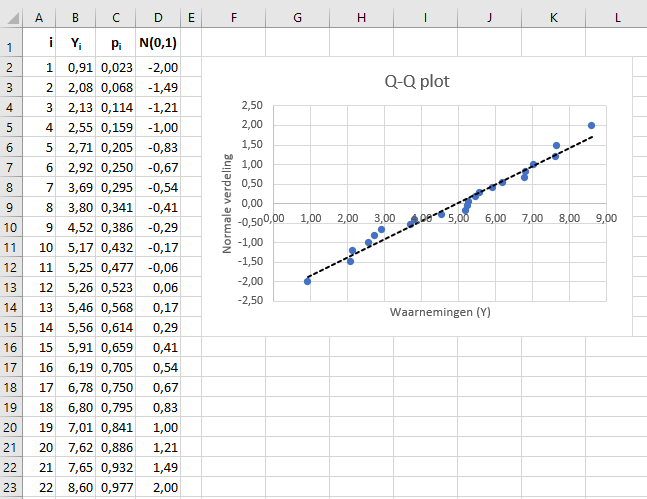
De punten liggen redelijk op een rechte lijn zodat er vanuit gegaan kan worden dat de waarnemingen redelijk een normale verdeling volgen.
2.6 Scheefheid en Kurtosis
Scheefheid en kurtosis zijn twee belangrijke maatstaven in de statistieken. Scheefheid verwijst naar het gebrek aan symmetrie en kurtosis verwijst naar de piek van een verdeling.
2.6.1 Scheefheid
Kenmerken van een scheve verdeling zijn:
- Gemiddelde, mediaan en modus vallen op verschillende punten.
- Kwartielen liggen niet op gelijke afstand van de mediaan.
- De curve is niet symmetrisch zoals bij een normale verdeling, maar meer naar de ene kant uitgerekt dan naar de andere, heeft een staart.
Bij een frequentieverdeling kun je drie vormen van de curve aantreffen.
- Symmetrische verdeling
- Rechts scheve verdeling - Heeft een lange rechterstaart, wat duidt op extreme waarden aan de positieve kant van de verdeling.
- Links scheve verdeling - Heeft een lange linkerstaart, wat duidt op extreme waarden aan de negatieve kant van de verdeling.
Voorbeelden rechts scheef
- De verdeling van individuele inkomens is meestal rechts scheef, waarbij de meeste personen minder dan het gemiddelde verdienen, maar met een lange rechterstaart van personen die veel meer verdienen.
- De verdeling van de scores op een bijzonder moeilijk examen zal positief scheef zijn, waarbij de meeste studenten rond een bepaalde gemiddelde waarde scoren en een paar uitschieters die veel hoger scoren.
- De verdeling van de familiegrootte is waarschijnlijk rechts scheef, omdat de meeste families 0-2 kinderen hebben, maar er zijn uitschieters met veel meer kinderen.
- De verdeling van de verkochte tickets per film is rechts scheef, omdat de meeste films matig zijn en relatief weinig totale kaartjes verkopen. Sommige toppertjes verkopen echter zeer veel kaartjes, waardoor de verdeling van bioscoopkaartjes rechts scheef loopt.
Voorbeelden links scheef
- De verdeling van de leeftijd van overlijden in de meeste populaties is links scheef. De meeste mensen worden tussen de 70 en 80 jaar oud, slechts weinig mensen worden veel ouder.
- De verdeling van scores op gemakkelijke examens of toetsen is vaak negatief scheef omdat de meeste studenten erg hoog scoren, terwijl een paar studenten veel lager scoren dan het gemiddelde.
- In de meeste jaren is de verdeling van de lengtes van het verspringen voor deelnemers aan de Olympische Spelen negatief, omdat de meeste deelnemers een sprong maken van ongeveer 7,5-8 meter, terwijl enkelen een sprong maken van slechts 5-6 meter.
- De verdeling van de dagelijkse beursrendementen is negatief scheef omdat de aandelenmarkt op de meeste dagen een licht positief rendement oplevert, maar af en toe enorme negatieve rendementen op een paar dagen.
Een beta verdeling kun je goed gebruiken om scheve verdelingen te demonstreren. Het aantal waarden moet je wel voldoende groot nemen, want zowel scheefheid en kurtosis hangen hier behoorlijk vanaf.
- \(\alpha\) > \(\beta\) : Links scheve verdeling (staart links)
- \(\alpha\) < \(\beta\) : Rechts scheve verdeling (staart rechts)
# definieer reeks
x <- seq(0, 1, length = 100)
# parameters beta verdeling
alpha <- 5
beta <- 2
# maak grafiek
par(bg = "transparent")
plot(x, dbeta(x, alpha, alpha), type = "l", ylab = "dichtheid", col = "green")
lines(x, dbeta(x, beta, alpha), col = "blue")
lines(x, dbeta(x, alpha, beta), col = "red")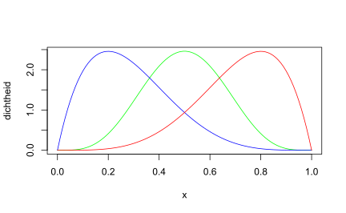
Een andere benadering is door willekeurige waarden uit een betaverdeling te genereren.
aantal <- 10000
set.seed(35486)
xl <- rbeta(aantal, alpha, beta) # links scheef
xr <- rbeta(aantal, beta, alpha) # rechts scheef
xs <- rbeta(aantal, alpha, alpha) # symmetrisch
par(bg = "transparent")
plot(density(xs), col = "green", xlim = c(- 0.1, 1.1), ylim = c(0, 5),
main="Scheefheid", ylab = "", xlab = "", xaxt="n", yaxt="n", frame.plot=FALSE)
lines(density(xl), col = "red")
lines(density(xr), col = "blue")
legend("topleft",
legend = c("rechts scheef", "symmetrisch", "links scheef"),
col = c("blue", "green", "red"),
lty = 1,
cex = 0.8)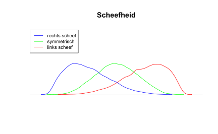
Gecombineerd met een histogram.
hist(xl, probability = TRUE, xlim = c(min(xl), max(xl)),
main = "", xlab = "x", ylab = "Dichtheid")
lines(density(xl), col = "red", lwd = 2)
hist(xr, probability = TRUE, xlim = c(min(xr), max(xr)),
main = "", xlab = "x")
lines(density(xr), col = "blue", lwd = 2)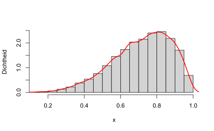
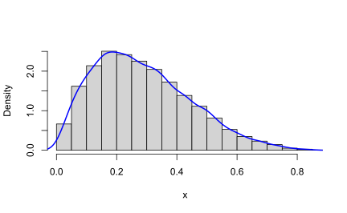
ggplot
df <- data.frame(xl, xr, xs)
ggplot(data = df, aes(xr)) +
geom_density() + theme_classic() + xlab("x") + ylab("dichtheid")
ggplot(data = df, aes(xs)) +
geom_density() + theme_classic() + xlab("x") + ylab("dichtheid")
ggplot(data = df, aes(xl)) +
geom_density() + theme_classic() + xlab("x") + ylab("dichtheid")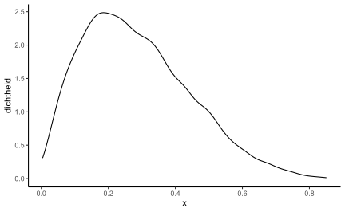
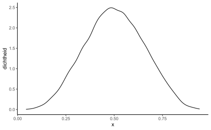
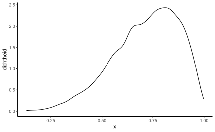
Berekening scheefheid
Een manier om de scheefheid in een dataset te berekenen is met Pearson’s scheefheid coefficient welke op twee manieren bepaald kan worden:
- \(scheefheid = \frac{gemiddelde - modus}{standaarddeviatie}\)
- \(scheefheid = 3 *\frac{gemiddelde - mediaan}{standaarddeviatie}\) heeft de voorkeur
Standaard R heeft geen functie voor de berekening van de scheefheid en kurtosis. De packages e1071 en moments hebben beide een functie skewness() en kurtosis().
2.6.2 Kurtosis
Kurtosis is een statistische maatstaf die aangeeft in welke mate de data zich in de staarten of de piek van een verdeling bevinden, vergeleken met een normale verdeling. Met andere woorden, het geeft aan of de staart van de verdeling verder reikt dan de ±3 standaarddeviatie van het gemiddelde of niet.
Er zijn drie soorten kurtosis die je in een verdeling kunt aantreffen:
- Mesokurtic - \(Kurtosis \pm3\). Verdeling heeft de vorm van een normale verdeling.
- Leptokurtiv - \(Kurtosis \gt 3\). Verdeling heeft een scherpere piek en zwaardere staarten, wat wijst op meer uitbijters en minder waarden in de buurt van het gemiddelde.
- Platykurtic - \(Kurtosis \lt 3\). Is minder gepiekt en heeft dunnere staarten, wat wijst op minder uitbijters en meer waarden in de buurt van het gemiddelde.
\[Kurtosis = \frac{n * \sum_i^n (x_i - \bar{x})^4}{(\sum_i^n (x_i - \bar{x})^2)^2}\]
Bij data-analyse is het concept van kurtosis erg belangrijk omdat het aangeeft hoe de uitbijters over de verdeling zijn verdeeld in vergelijking met een normale verdeling. Soms wordt de relatieve kurtosis van de verdeling bepaald in termen van overtollige kurtosis, welke berekend wordt door 3 af te trekken van de kurtosis, dus \(kurtosis - 3\). Je kunt dan de kurtosis uitdrukken als positief, negatief of nul.
Voorbeeld
In de financiele wereld wordt op het gebied van risicobeheer en beleggingsrendement vaak gekeken naar de kurtosis. Deze geeft aan of er enige kans is op extreme waarden van rendementen. Een belegger zal zich vaak meer op zijn gemak voelen bij een platykurtische rendementsverdeling, omdat dit stabiele rendementen en een lager risico op plotselinge schokken van uitschieters aangeeft, terwijl een leptokurtische verdeling meer kansen op een hoger rendement maar met een hoger risico oplevert.
2.6.3 Oefeningen
Symmetrische verdeling
x <- rep(seq(from=65, to=135, by=5),
times=c(seq(3, 24, 3), seq(21,3,-3)))
hist(x, breaks = seq(from=60, to=140, by=5), prob = TRUE,
main = "Symmetrische verdeling", ylab = "Dichtheid",
col = "lightblue")
lines(density(x), col = "black", lwd = 2)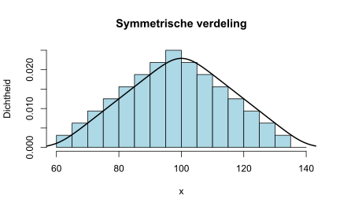
Scheefheid = 0 en Kurtosis = 2.381
Positieve scheefheid
x <- rep(seq(from=90, to=140, by=5),
times = c(18,21,24,21,18,15,12,9,6,3,1))
hist(x, breaks = seq(from=80, to=150, by=5), prob = TRUE,
main = "Scheefheid positief", ylab = "Dichtheid",
col = "lightblue")
lines(density(x), col = "black", lwd = 2)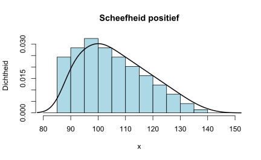
Scheefheid = 0.509 en Kurtosis = 2.45
Negatieve scheefheid
x <- rep(seq(from=60, to=110, by=5),
times = c(1,3,6,9,12,15,18,21,24,21,18))
hist(x, breaks = seq(from=50, to=120, by=5), prob = TRUE,
main = "Scheefheid negatief", ylab = "Dichtheid",
col = "lightblue")
lines(density(x), col = "black", lwd = 2)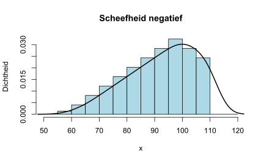
Scheefheid = -0.509 en Kurtosis = 2.45
Kurtosis negatief
x <- rep(seq(from=65, to=135, by=5),
each = 10)
hist(x, breaks = seq(from=60, to=140, by=5), prob = TRUE,
main = "Kurtosis negatief", ylab = "Dichtheid",
col = "lightblue")
lines(density(x), col = "black", lwd = 2)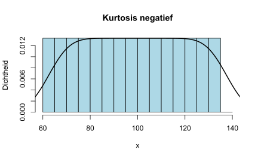
Kurtosis = 1.789
Kurtosis positief
x <- rep(seq(from=65, to=135, by=5),
times = c(2,2,3,3,3,4,27,32,27,4,3,3,3,2,2))
hist(x, breaks = seq(from=60, to=140, by=5), prob = TRUE,
main = "Kurtosis positief", ylab = "Dichtheid",
col = "lightblue")
lines(density(x), col = "black", lwd = 2)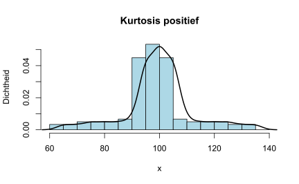
Kurtosis = 4.722
Voorbeeld
xn <- rep(seq(from=65, to=135, by=5),
times = c(3,4,4,4,5,5,5,5,5,5,5,4,4,4,3))
plot(density(xn), main="", xlab="", ylab="", yaxt = "n", xaxt = "n")
xp <- rep(seq(from=65, to=135, by=5),
times = c(2,2,3,3,3,4,27,32,27,4,3,3,3,2,2))
plot(density(xp), main = "", xlab="", ylab="", yaxt = "n", xaxt = "n")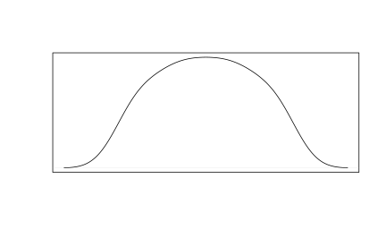
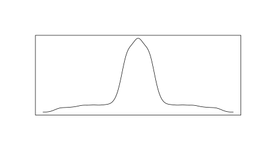
2.7 Geschikte verdeling zoeken
Een interessante functie is fitdistr() uit package MASS waarmee je een geschikte kansverdeling voor een dataset kunt bepalen..
fitdistr(x, densfun, start, ...)
x- numerieke vector met de te onderzoeken waardendensfun- String met verdeling waarmee getest wordt: “beta”, “cauchy”, “chi-squared”, “exponential”, “gamma”, “geometric”, “log-normal”, “lognormal”, “logistic”, “negative binomial”, “normal”, “Poisson”, “t”, “weibull”start- optioneel beginwaarden voor parameters
Returnwaarden
estimate- de schatting van de parameterssd- de geschatte standaardfoutenvcov- de geschatte variantie-covariantie matrixloglik- de log-likelihood.
# Genereer een normale verdeling
x <- rnorm(n = 1000, mean = 6, sd = 1.5)
# Geschatte parameters
verdeling <- MASS::fitdistr(x, "normal")
verdeling$estimate
#> mean sd
#> 5.97 1.50
verdeling$sd
#> mean sd
#> 0.0474 0.0335
verdeling$vcov
#> mean sd
#> mean 0.00225 0.00000
#> sd 0.00000 0.00112
verdeling$loglik
#> [1] -1824Bronnen: